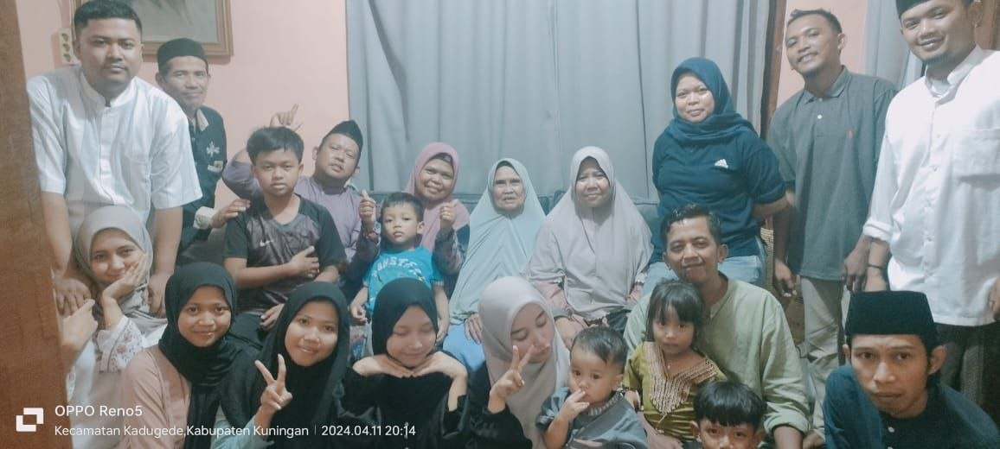
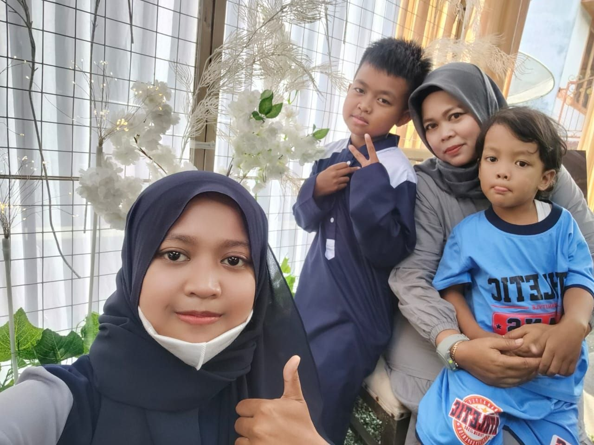

Keluarga Besar

Ada pepatah bilang, tak kenal maka tak sayang. Makanya kenalan dulu yuk sama keluarga Sandwich Generation ini. Perkenalkan ini adalah foto keluarga besar Ma Anah, bisa dibilang beliau adalah nenekku. Foto ini diambil saat momen lebaran dan hanya punya satu-satunya di handphone-ku. Kami di sini adalah keluarga yang hangat dan tali kekeluargaannya masih sangat erat terikat. Di sisi lain, nenekku punya 5 orang anak dan ibuku adalah anak terakhir. Jadi, mari kita spill tipis-tipis tentang keluarga kecil dari ibuku, yaitu Bu Wati.
Keluarga Kecil Bu Wati

Perkenalkan, ini adalah keluarga Bu Wati, seorang ibu berusia 45 tahun yang luar biasa sabar dalam mengurus ketiga buah hatinya. Beliau tidak hanya seorang ibu yang penuh kasih, tetapi juga chef kitchen sejati di rumah yang hobinya selalu bereksperimen menciptakan aneka kue lezat.
Anak pertamanya adalah Auliya, gadis berusia 20 tahun yang menjadi cucu kesayangan sang nenek—yeah, that's me, who always sleeping cuz it makes me feel completely re-energized!
Selanjutnya ada anak kedua, yaitu Rehan, remaja berusia 14 tahun yang sedang punya impian besar menjadi pro-player, makanya dia terus menaikkan MMR Mobile Legends. Hobi anak kedua ini paling absurd karena punya skill andalan mengangkat galon air tanpa tumpah.
Terakhir, ada si bungsu Rafka yang baru berusia 8 tahun. Sebagai anak paling kecil, hobi Rafka sangat konsisten dan tak kenal waktu, yaitu minta jajan 24/7 alias setiap saat.